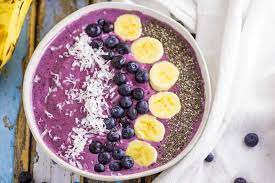

Blueberry smoothie

Description
One of the most tasty and delecious smoothie you will ever drink.
Ingredients
- 1 cup frozen blueberries
- ½ banana
- 2 tablespoons water
- 1 tablespoon cashew butter
- 1 teaspoon vanilla extract
Steps
- Blend blueberries, 1/2 banana, water, cashew butter, and vanilla extract together in a blender until smooth; pour into a bowl.
- Top smoothie with sliced banana, almonds, and coconut.